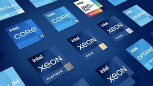

En los últimos años, la industria de la fabricación de procesadores ha sido testigo de avances revolucionarios, impulsando una incesante carrera hacia la miniaturización. Este progreso se mide en nanómetros (nm), una unidad que indica el tamaño de los transistores, los diminutos interruptores electrónicos que son los componentes fundamentales de cualquier chip. Hemos pasado de procesos de fabricación que antes eran comunes, como los 14 nm, a tecnologías de vanguardia de 7 nm y, más recientemente, hemos alcanzado hitos impresionantes con los 5 nm, e incluso se exploran ya los 3 nm y menos.
Esta reducción constante en el tamaño de los transistores tiene implicaciones profundas y sumamente beneficiosas para el rendimiento y la eficiencia de los procesadores:
Mayor Densidad de Transistores: Al hacer los transistores más pequeños, los fabricantes pueden empaquetar una cantidad significativamente mayor de ellos en un área de silicio idéntica. Esto permite crear procesadores con más núcleos, más memoria caché y unidades de procesamiento especializadas, lo que se traduce directamente en una capacidad de procesamiento superior.
Mejora del Rendimiento: Más transistores en el mismo espacio significa que el procesador puede realizar más cálculos y ejecutar más instrucciones por ciclo de reloj. Además, los transistores más pequeños conmutan más rápido, lo que contribuye a un aumento general en la velocidad de procesamiento y la capacidad de respuesta del sistema.
Menor Consumo de Energía: Los transistores más pequeños requieren menos voltaje para funcionar. Esta eficiencia energética es crucial, ya que un menor consumo de energía no solo reduce la factura eléctrica en dispositivos fijos, sino que extiende drásticamente la duración de la batería en dispositivos móviles y portátiles como smartphones, laptops y tablets. Es un factor determinante para la autonomía de los equipos.
Reducción en la Generación de Calor: Un menor consumo de energía va de la mano con una menor generación de calor. El calor es el enemigo número uno de los componentes electrónicos, ya que puede degradar su rendimiento y reducir su vida útil. Procesadores que generan menos calor son más estables, pueden mantener velocidades de reloj más altas por más tiempo (sin "throttling" o ralentización por temperatura), y requieren sistemas de refrigeración menos voluminosos y ruidosos, lo cual es fundamental para el diseño compacto de la electrónica moderna.
Estos avances en miniaturización son un pilar fundamental en la evolución tecnológica. Han permitido no solo que las computadoras sean más potentes y eficientes, sino que también han sido clave para la proliferación de la computación en todas partes, desde la inteligencia artificial y el aprendizaje automático hasta la realidad virtual y los dispositivos de bolsillo. La continua búsqueda de procesos de fabricación aún más pequeños promete seguir empujando los límites de lo que es posible en el mundo de la electrónica.
La integración de la inteligencia artificial (IA) directamente en el hardware de los procesadores ha revolucionado el funcionamiento y las capacidades de los dispositivos modernos. Lejos de ser solo una función de software, la IA ahora cuenta con unidades especializadas (NPU o Neural Processing Units) incrustadas en los chips, diseñadas específicamente para acelerar las tareas relacionadas con la IA y el Machine Learning (ML). Estas unidades dedicadas mejoran drásticamente el rendimiento en aplicaciones y funciones cotidianas como: Reconocimiento de voz: Permitiendo que asistentes virtuales como Siri, Google Assistant o Alexa respondan más rápido y con mayor precisión. Optimización de imágenes y videos: Desde el procesamiento en tiempo real para mejorar la calidad de las fotos en tu smartphone, hasta la aplicación de filtros complejos o la estabilización de video con mínima latencia. Aceleración de algoritmos de aprendizaje automático: Facilitando tareas como la detección de patrones, la predicción de comportamientos, la traducción en tiempo real y la personalización de la experiencia del usuario. Empresas líderes en la industria tecnológica como Apple (con sus chips A-series y M-series), Qualcomm (con sus plataformas Snapdragon) y Google (con sus procesadores Tensor) han estado a la vanguardia en el desarrollo de procesadores con robustas capacidades de IA. Su objetivo es claro: mejorar exponencialmente la experiencia del usuario, haciendo los dispositivos no solo más rápidos, sino también más inteligentes, intuitivos y eficientes en el manejo de cargas de trabajo relacionadas con la IA. Esto permite que funciones avanzadas de IA se ejecuten directamente en el dispositivo (on-device AI) sin necesidad de enviar datos a la nube, lo que mejora la privacidad, la velocidad y reduce el consumo de datos.
El futuro de los procesadores no solo reside en la miniaturización, sino también en la audaz exploración de nuevos materiales y arquitecturas revolucionarias. Los fabricantes están investigando activamente alternativas al silicio tradicional para superar las limitaciones físicas inherentes a la tecnología actual. Entre los materiales más prometedores se encuentran: El grafeno: Conocido por su excepcional conductividad eléctrica y térmica, el grafeno podría permitir transistores que conmuten a velocidades mucho mayores y con una disipación de calor extremadamente eficiente. Su delgadez (una sola capa de átomos) abre puertas a diseños de chips completamente nuevos. Nanotubos de carbono: Ofrecen propiedades eléctricas similares al grafeno y la posibilidad de crear transistores aún más pequeños y eficientes. Además de los nuevos materiales, la innovación se extiende a las estructuras tridimensionales (3D) en la fabricación de chips. En lugar de colocar todos los componentes en un plano bidimensional, las arquitecturas 3D apilan capas de transistores y otros elementos, reduciendo las distancias entre ellos y, por ende, el tiempo que tardan las señales en viajar. Esto busca: Aumentar la eficiencia energética: Al reducir la distancia de las interconexiones. Mejorar la conductividad térmica: Facilitando la gestión del calor en un espacio más denso. Permitir chips más potentes: Integrando más funcionalidad en un menor volumen. Menor disipación de calor: Llevando a sistemas más estables y compactos. En el futuro, podríamos ver una adopción más amplia de estas tecnologías emergentes, mejorando considerablemente no solo el desempeño bruto de los procesadores, sino también su eficiencia, lo que impulsará la próxima ola de innovaciones en la computación..
Comparación entre los principales procesadores de teléfonos y computadoras Aunque tanto los procesadores de teléfonos como los de computadoras son el "cerebro" de sus respectivos dispositivos, sus funciones y enfoques de diseño son marcadamente distintos. Los SoC (System-on-a-Chip) de teléfonos, como el Qualcomm Snapdragon o los Apple A-series y M-series, están meticulosamente diseñados para maximizar la eficiencia energética. Dada la dependencia de la batería en los dispositivos móviles, estos chips priorizan el rendimiento por vatio. Integran no solo la CPU, sino también la GPU (unidad de procesamiento gráfico), el módem celular, controladores de memoria, unidades de IA y otros componentes esenciales en un solo encapsulado, lo que contribuye a su eficiencia y tamaño compacto. Por otro lado, los procesadores de computadoras como el Intel Core i7 y el AMD Ryzen 7 están principalmente enfocados en la potencia bruta y la capacidad de procesamiento sostenido. Diseñados para trabajar con fuentes de alimentación constantes y sistemas de refrigeración más robustos, priorizan la ejecución de tareas complejas y exigentes durante períodos prolongados. La diferencia principal radica en la estructura de sus núcleos (más núcleos de alto rendimiento, a veces con mayor consumo de energía) y la manera en que manejan múltiples procesos simultáneamente (multitarea pesada y cargas de trabajo concurrentes).
Las pruebas de rendimiento, o benchmarks, son herramientas esenciales que permiten comparar objetivamente distintos procesadores en una variedad de tareas controladas. Estas pruebas simulan cargas de trabajo reales para ofrecer una métrica cuantificable del desempeño. En los teléfonos, los benchmarks suelen analizar aspectos como la velocidad de carga de aplicaciones, el rendimiento gráfico en juegos (FPS), la capacidad de procesamiento de IA y, crucialmente, la eficiencia energética bajo carga. En computadoras, las pruebas evalúan la velocidad en escenarios de alta demanda, como la edición de video 4K, el diseño gráfico y la renderización 3D, la compilación de código en programación, el rendimiento en videojuegos exigentes y la multitarea intensiva. Estas pruebas son cruciales tanto para los fabricantes (para optimizar sus diseños) como para los consumidores, quienes las utilizan como una guía fiable al momento de elegir un procesador adecuado para sus necesidades y presupuesto específicos.
Es una verdad fundamental en la tecnología: el procesador más caro no siempre es el mejor para todos los usuarios. La elección ideal depende intrínsecamente de las tareas que se realizarán y del presupuesto disponible. Para tareas básicas de oficina, navegación web, consumo de multimedia o estudio, un procesador de gama media puede ser la mejor opción en términos de costo-beneficio. Estos procesadores ofrecen un rendimiento más que suficiente para la mayoría de las actividades diarias sin incurrir en un gasto excesivo. Sin embargo, para usuarios con necesidades más exigentes, como gamers entusiastas, creadores de contenido (editores de video, diseñadores gráficos, músicos), o profesionales que trabajan con software de alta demanda (ingeniería, ciencia de datos), los procesadores de alta gama justifican su precio con un rendimiento superior. Su capacidad para manejar cargas de trabajo intensivas, la mayor cantidad de núcleos, las frecuencias de reloj más altas y las tecnologías avanzadas, se traducen directamente en un ahorro de tiempo y una mayor productividad. La clave está en alinear la inversión con el uso previsto y las expectativas de rendimiento.
Al momento de elegir un procesador, es importante tener en cuenta el tipo de uso que se le dará al dispositivo. Para tareas de oficina, navegación web y consumo de multimedia, un procesador de gama baja o media puede ser suficiente. Para edición de video, modelado 3D y gaming, es recomendable optar por procesadores de alto rendimiento con múltiples núcleos y una frecuencia de reloj elevada.
En los dispositivos móviles, el equilibrio entre rendimiento y consumo energético es clave. Un procesador más potente puede ofrecer un mejor desempeño, pero si no está bien optimizado, puede reducir considerablemente la duración de la batería. Los fabricantes están desarrollando tecnologías como la administración inteligente de energía y núcleos de bajo consumo para extender la autonomía sin comprometer la velocidad.
Es importante definir cuánto se está dispuesto a invertir en un procesador y qué se espera del dispositivo. En el caso de las computadoras, las opciones van desde procesadores económicos para tareas básicas hasta modelos de gama alta que ofrecen un rendimiento superior para aplicaciones exigentes. Evaluar las opciones dentro del presupuesto permitirá tomar una decisión más informada.
La evolución de los procesadores está siendo impulsada por la inteligencia artificial, el 5G y la computación cuántica. Los fabricantes están diseñando chips más eficientes que pueden manejar cargas de trabajo complejas con menor consumo de energía. Se espera que en los próximos años los procesadores sean capaces de realizar tareas de IA de manera autónoma, optimizando la experiencia del usuario en diversos dispositivos.
A medida que los procesadores se vuelven más potentes, uno de los principales retos es el control del calor y la eficiencia energética. La miniaturización de los transistores plantea desafíos en términos de disipación de calor y estabilidad eléctrica. Además, la demanda de mayor potencia computacional para aplicaciones como el metaverso y la realidad aumentada exigirá nuevas innovaciones en el diseño de chips.
Investigaciones en curso buscan desarrollar nuevos tipos de procesadores, como los chips neuromórficos, que imitan la estructura del cerebro humano para mejorar la eficiencia en tareas de IA. Empresas como IBM y Google están explorando el uso de la computación cuántica para resolver problemas que los procesadores tradicionales no pueden abordar, abriendo la puerta a una nueva era en la informática.
Existen múltiples fuentes donde se pueden encontrar estudios y análisis detallados sobre la evolución de los procesadores. Desde publicaciones científicas hasta artículos técnicos, estas fuentes ofrecen información detallada sobre las últimas tendencias y desarrollos.
Para aquellos interesados en aprender más sobre procesadores, existen tutoriales y guías en línea que explican su funcionamiento en detalle. Estos recursos pueden ser útiles tanto para principiantes como para expertos en tecnología.
Existen diversas comunidades en línea donde los entusiastas de la tecnología discuten los últimos avances en procesadores. Participar en estos foros puede ser una excelente manera de mantenerse actualizado y aprender de otros usuarios con experiencia en el tema.
